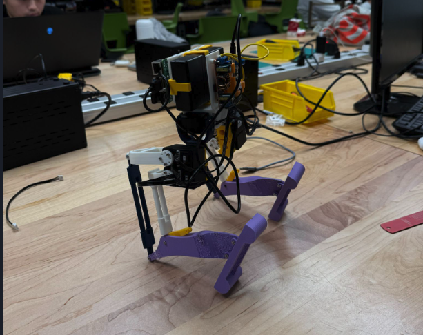

Robotics Studio Project, Columbia University (Sep 2024 - Dec 2024)
- Designed, fabricated, assembled, and programmed a bipedal walking robot from scratch with a teammate.
- Performed kinematic analysis of bipedal walking gait using keyframing from CAD software and function smoothing.
- Achieved a final walking speed of 10.4 cm/s.